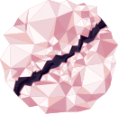

Ia'Vorien is the second planet from Ae'Uuvoria and the world of Light. It is one of the three planets in the system that harbor life, but its life is nothing like Oa'Veyra's.
Life on Ia'Vorien is built on silicon instead of carbon. That chemistry suits a world this hot: its surface averages 150–250 °C under a thin atmosphere.
Its 38° axial tilt gives it strong, uneven seasons over its nearly century-long year.
After Ae'Uuvoria's connection to Oa'Veyra was severed, the creator turned its attention here, to the silicon life of Ia'Vorien.
Seen from Oa'Veyra, Ia'Vorien is the brightest planet in the sky, much like Venus is from Earth.